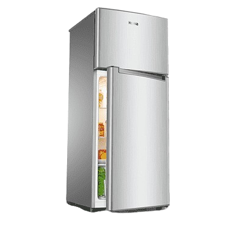
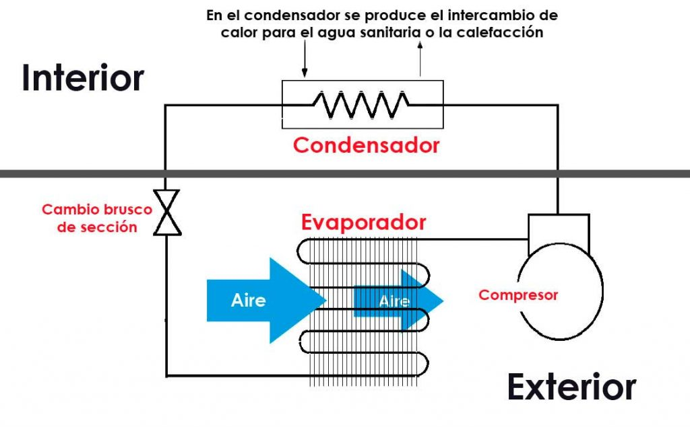

- En el primer paso el fluido refrigerante se encuentra a baja temperatura y a baja presión y, por lo tanto, en estado líquido. El aire aspirado del ambiente pasa a través del evaporador, dónde el fluido refrigerante absorbe la temperatura del aire ambiente y cambia de estado. Al mismo tiempo, el aire es expulsado a una temperatura más baja.
- El fluido refrigerante llega al paso 2 en forma de vapor pero todavía a baja presión. Pasándolo a través del compresor se produce un aumento de la presión con el consiguiente aumento de temperatura.
- Como resultado se obtiene vapor en un estado elevado de energía (proveniente del calor del aire en el evaporador más el calor proveniente de la transformación de la energía eléctrica en energía calorífica). Este vapor situado en el paso 3 es el que circula por el condensador situado a lo largo del calderín donde va cediendo toda la energía al agua acumulada, volviendo así a estado líquido.
- En el último paso del proceso, el fluido refrigerante ya en estado líquido se hace pasar por la válvula de expansión para obtener de nuevo el fluido en sus condiciones iniciales, es decir, a baja presión y a baja temperatura. De esta forma se puede volver a iniciar el proceso.
Definición:
La bomba de calor es una máquina térmica que toma calor de un espacio frío y lo transfiere a otro más caliente gracias a un trabajo mecánico aportado desde el exterior; es decir, hace lo mismo exactamente que la máquina frigorífica; lo único que cambia es el objetivo. En la máquina frigorífica el objetivo es enfriar y mantener frío el espacio frío, mientras que en la bomba de calor sería lo inverso, es decir mantener caliente el espacio caliente.
Tipos de Bombas
- Bombas Centrífugas: Utilizan la fuerza centrífuga para mover el fluido.
- Bombas de Diafragma: Utilizan un diafragma para mover el fluido.
- Bombas de Émbolo: Utilizan un émbolo para desplazar el fluido.

¿Cómo funciona una bomba de calor?
Un ejemplo claro de bomba de calor es el frigorífico. En este caso, se transfiere el calor del interior del frigorífico (reduciendo su temperatura) hacia el exterior, aumentando la temperatura de la estancia. En el caso de una bomba de calor para producción de agua caliente sanitaria el funcionamiento es similar: el gas absorbe el calor del aire del ambiente y lo cede al acumulador de agua a través de un condensador.
El principio de funcionamiento de la bomba de calor se basa en los principios de la termodinámica y se puede estructurar en 4 pasos:

Coeficiente de eficiencia de la bomba de calor (CoP)
El concepto de rendimiento se aplica a máquinas de generación o transformación de energía, y, de conformidad con el primer principio de la termodinámica, su valor no puede ser superior a la unidad. Las máquinas frigoríficas, y por tanto la bomba de calor, no generan energía, solo la transportan de una región fría a otra más caliente. En este cometido, se obtienen rendimientos superiores al 100%. Para evitar la confusión que esto podría suponer, en este tipo de máquinas el concepto de rendimiento toma el nombre genérico de eficiencia y en el caso de la bomba de calor, el coeficiente de eficiencia se denomina CoP, que es el acrónimo de Coefficient of Performance.